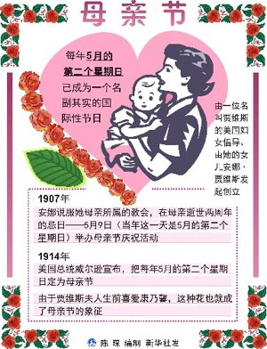
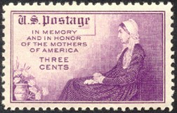

| 母亲节 |
| www.XINHUANET.com |
| 【字体：大 中 小】 | 【背景色 】 |
|
慈母手中线，游子身上衣。――（唐）孟 郊 母亲节的由来 古母亲节起源于希腊，古希腊人在这一天向希腊神话中的众神之母赫拉致敬。在17世纪中叶，母亲节流传到英国，英国人把封斋期的第四个星期天作为母亲节。在这一天里，出门在外的年轻人将回到家中，给他们的母亲带上一些小礼物。 现代意义上的母亲节 (MOTHER'S DAY) 起源于美国，由安娜・贾维斯 (Anna Jarvis，1864－1948) 发起。她终身未婚，膝下无儿无女。1906年5月9日，安娜・贾维斯的母亲不幸去世，她悲痛万分。在次年母亲逝世的周年忌日，贾维斯组织了追思母亲的活动，并鼓励他人也以类似方式来表达对各自慈母的感激之情。 贾维斯写信给西弗吉尼亚州格拉夫顿的安德鲁斯循道圣公会教堂，请求为她的母亲做特别追思礼拜。她母亲生前为这一教堂的星期日学校服务了20多年。1908年，教堂宣布贾维斯母亲忌日――5月的第二个星期日为母亲节。贾维斯还组织了一个母亲节委员会，开始大规模宣传，呼吁将母亲节定为法定节日。 她的呼吁获得热烈响应。1913年5月10日，美国参众两院通过决议案，由威尔逊总统签署公告，决定每年5月的第二个星期日为母亲节。这一举措引起世界各国纷纷仿效，至1948年贾维斯谢世时，已有43个国家设立了母亲节。美国政府还规定，母亲节这天，家家户户都要悬挂国旗，以表示对母亲的尊敬。>> 母亲之花――康乃馨  1934年5月，美国首次发行母亲节纪念邮票，邮票上一位慈祥的母亲，双手放在膝上，欣喜地看着前面的花瓶中一束鲜艳美丽的康乃馨。随着邮票的传播，在许多人的心目中把母亲节与康乃馨联系起来，康乃馨便成了象征母爱之花，受到人们的敬重。人们把思念母亲、孝敬母亲的感情，寄托于康乃馨上，康乃馨也成为了赠送母亲不可缺少的珍贵礼品。除了这些情感因素外，康乃馨的天生丽质应是它受到人们宠爱的主要原因，或许也正是它的美丽而成为献给母亲的佳品。 我国也有一种母亲之花，它就是萱草花。 萱草，在我国一向有“母亲花”的美称。远在《诗经、卫风、伯兮》里载： “焉得谖草，言树之背？”谖草就是萱草，古人又叫它忘忧草，背，北，指母亲住的北房。这句话的意思就是：我到哪里弄到一支萱草，种在母亲堂前，让母亲乐而忘忧呢？母亲住的屋子又叫萱堂，以萱草代替母爱，如孟郊的游子诗：“萱草生堂阶，游子行天涯；慈母依堂前，不见萱草花。”叶梦得的诗云：“白发萱堂上，孩儿更共怀。”萱草就成了母亲的代称，萱草也就自然成了我国的母亲之花。 萱草是百合科多年生草本植物，根茎肉质，叶狭长，细长的枝顶端开出桔红或桔黄色的花，十分艳丽，它不仅供人观赏，花蕾叫金针，也可作蔬菜供人食用，在我国南北方广为栽植。 吉总统签署法令创建“母亲日”
| ||||||||||||